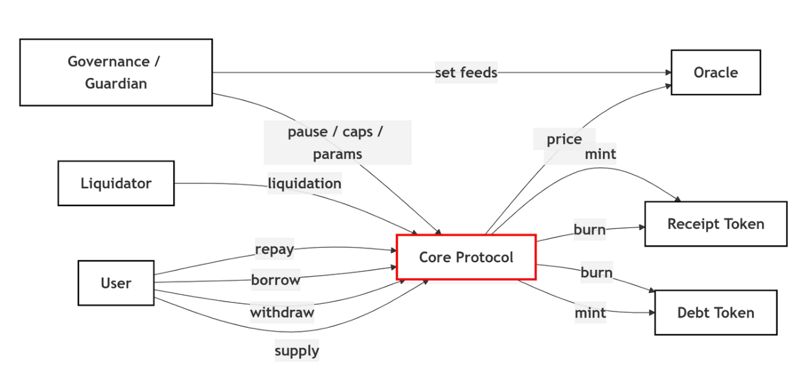
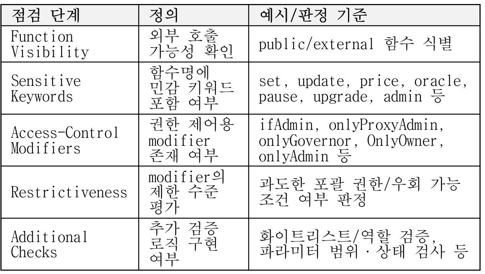
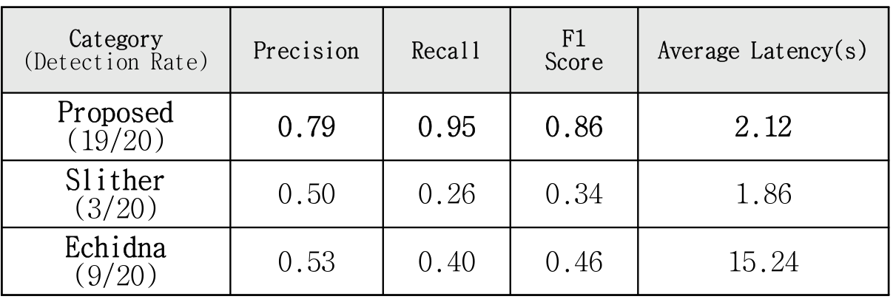
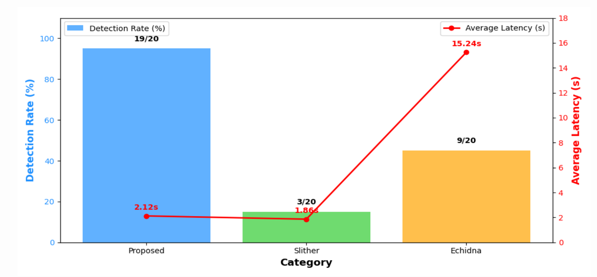

내용
권한 확인 없이 호출되는 함수가 탈중앙 금융(DeFi) 해킹 피해의 최대 원인입니다.
- 피해 규모
- Xangle 집계로 2023년 DeFi 해킹 피해액의 65.1%를 차지했습니다.
- 필요성
- 컨트랙트는 배포하면 고치기 어려워 배포 전 점검이 필요합니다.

Publication
함수마다 외부 호출 가능 여부, 민감 기능 여부, 권한 제한과 추가 검증을 차례로 확인합니다. 컨트랙트마다 다른 접근 권한을 같은 기준으로 점검하는 절차입니다.
2020~2024년 해킹 사례 20건. Slither 3건, Echidna 9건
2020~2024년 해킹 사례 20건 기준
Slither 1.86초보다 느리고 Echidna 15.24초보다 빠름
권한 확인 없이 호출되는 함수가 탈중앙 금융(DeFi) 해킹 피해의 최대 원인입니다.

함수마다 같은 다섯 가지를 차례로 확인해 권한 검증이 부족한 곳을 찾습니다.

해킹 사례 20건 중 19건을 탐지했고 속도는 기존 도구 Slither보다 느렸습니다.


프로토콜마다 다른 접근 제어를 같은 기준으로 점검하는 절차를 제시했습니다.
놓친 1건과 느린 속도가 한계이며 저널 논문으로 확장됐습니다.